APACHE SPOT
简介 INTRODUCTION
Apache Spot是一个基于网络流量和数据包分析，通过独特的机器学习方法，发现潜在安全威胁和未知网络攻击能力的开源方案。目前Apache Spot 已支持对Netflow、sflow、DNS、Proxy的网络流量分析，主要依靠HDFS、Hive 提供存储能力，Spark提供计算能力，基于LDA算法提供无监督式机器学习能力，最终依赖Jupyter 提供图形化交互能力，产生少量且准确的安全威胁事件呈现给用户。
数据采集 SPOT-Ingest
Spot克服了如何提高从不同数据源中进行数据采集的挑战，尤其是大多数时间，采集器每秒发送远超过服务器可用资源（CPU，内存）的数以千计的网络事件。借助Spot，可以确保服务可用性接近100%，且不会丢失数据。Spot可以在需要时启用更快速，可扩展的分布式服务。由于其分布式体系结构，当执行采集器守护程序的数据节点在高峰工作负载崩溃，致使数据排队时，不会发生数据丢失。这种架构确保可用性接近99.99999%，而不会损失信息。
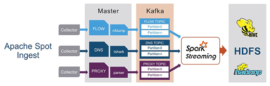
采集模块内部
Spot-Collectors
守护进程在后台对文件系统路径进行监视或者采集。采集器检测通过网络工具产生的新文件或留在路径中用以采集的之前产生的数据。随后，采集器使用解剖工具（例如nfdump或tshark）将这些数据转换为可读的格式。
Kafka
对每个采集进程的实例创建一个新的主题。分块由采集中的Workers数量来定义。Kafka存储采集器发送来的数据，并由Worker来解析数据。
Spot Workers
和采集器一样，Workers是后台运行的守护进程，关注特定的Kafka主题和分块。Spot Workers读取、解析并将数据存储在特定的Hive表中，随后用于机器学习算法。
当前有两种类型的Workers，一是Python Workers，使用多线程和已定义的解析器来处理数据；二是Spark-Streaming Workers，使用spark-streaming上下文（微批处理）执行Spark应用来读取Kafka中的数据。
机器学习 SPOT-ML
Spot机器学习组件包含用于对从网络收集的Netflow、DNS、代理日志进行可疑连接分析的例程。分析使用收集的网络事件，并生成被认为最不可能事件的列表，这些事件被认为是最可疑的。它们依赖Spot采集组件来收集加载Netflow、DNS和代理记录。
Spot使用主题模型来发现正常和不正常的行为。它将与某个IP相关的日志集视为一个文档，并使用LDA来发现这些文档集中隐藏的语义结构。
LDA是用于离散数据的生成概率模型，如文本语料库。LDA是一种三层贝叶斯模型，其中文档的每个词都是从一组潜在主题的混合中生成的。我们将LDA应用于网络流量，通过聚合和离散将网络日志条目转换为单词。在这种方式中，文档对应于IP地址，单词对应于日志条目（与IP地址相关的），主题对应于常见网络活动配置。
Spot对每个IP地址的网络行为建立一个概率模型。每个网络日志条目根据模型分配一个估计的可能性（分数）。这些低分事件会被标注为“可疑的”，用于以后的分析。
可视化 SPOT-OA
Spot-OA基于IPython、D3JS、jQuery、Bootstrap、ReactJS技术向用户提供数据处理、转换以及数据可视化的能力。当前版本主要通过Suspicious、Threat Investigation、Story Board三个视图页面提供针对Flow、DNS、Proxy事件的可视化分析能力。此外，通过Ingest Summary Notebook视图页面，提供了解指定时间段内数据采集情况的能力。
可疑分析 (suspicious.html)
通过查看Apache Spot的机器学习算法检测到的安全威胁列表来研究可疑的网络活动。
Suspicious视图页面用于呈现Spot-ML发现的可疑活动，主要由四个面板组成。
Suspicious以数据列表的形式展现Spot-ML 发现的可疑活动；Network View以可视化的形式表现这些可疑活动；Details用于挖掘某个可疑活动更为细节的信息。Scoring提供一种专家能力，通过人为介入的方式修正或改善机器学习模型。
NetFlow Suspicious
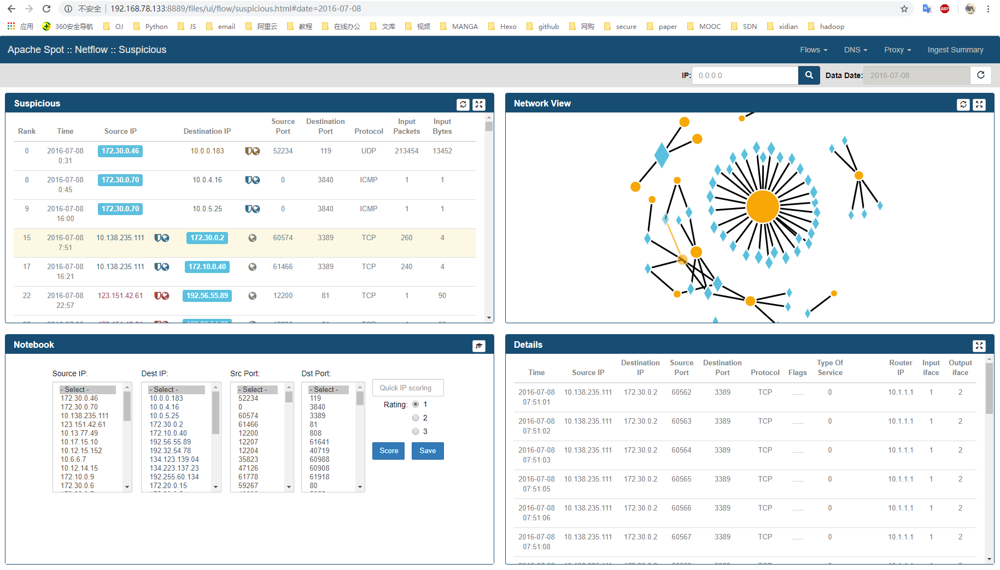
DNS Suspicious
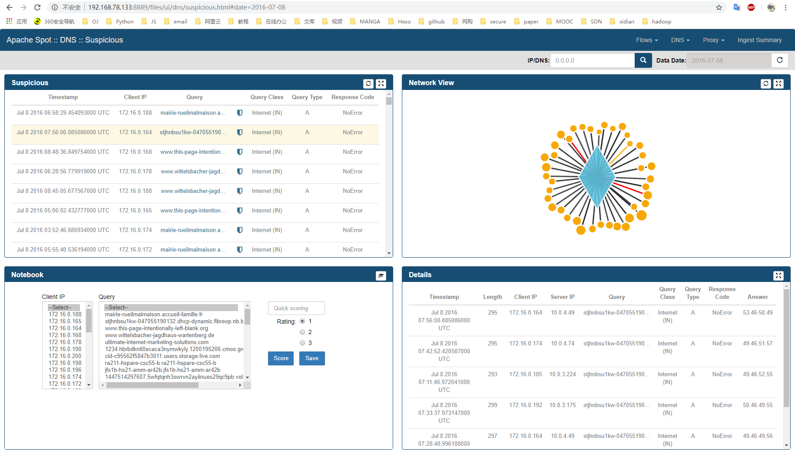
Suspicious
- 通过选择可疑帧中的特定行，将突出显示网络视图中的连接。
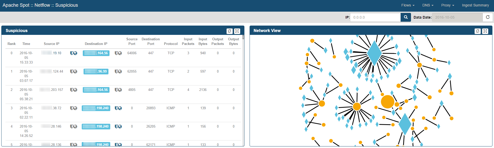 - 通过执行此行选择，“详细信息框架”显示在与选择的可疑记录同一分钟内发生的源和目标IP地址之间的所有Netflow记录。
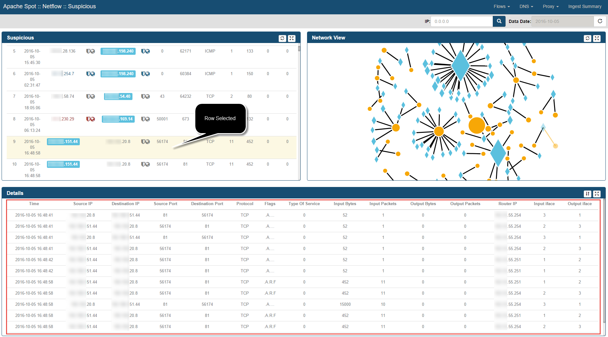 - IP地址带有附加信息，显示该IP的信誉值及地理位置信息上下文。
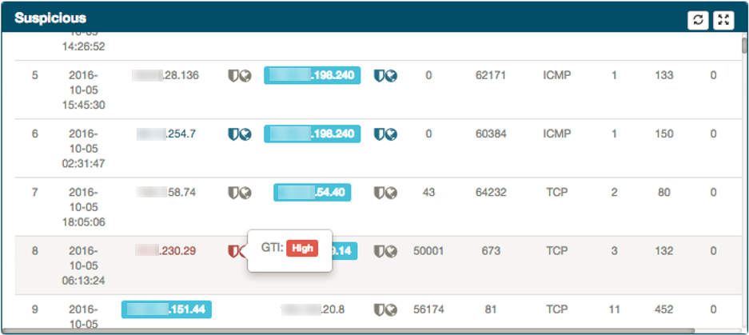
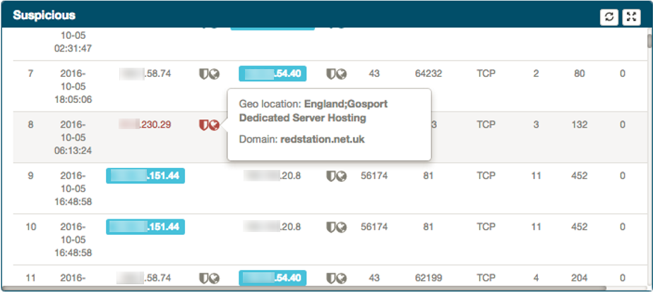
Network
- 显示节点IP，右击该节点可对信息进行过滤，只显示与该IP有关的流信息，以便将IP过滤器应用于可疑网页。
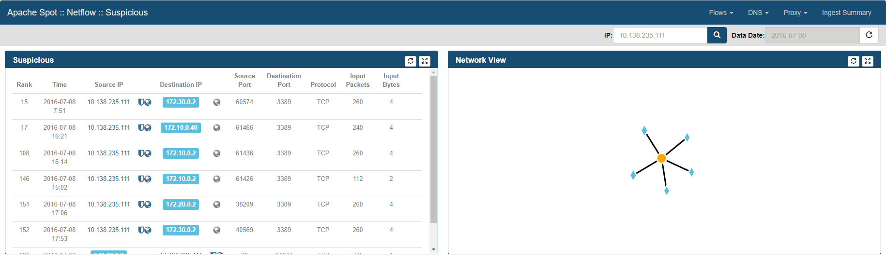 - 左击网络节点，在Details中显示该IP与其他IP连接的和弦图
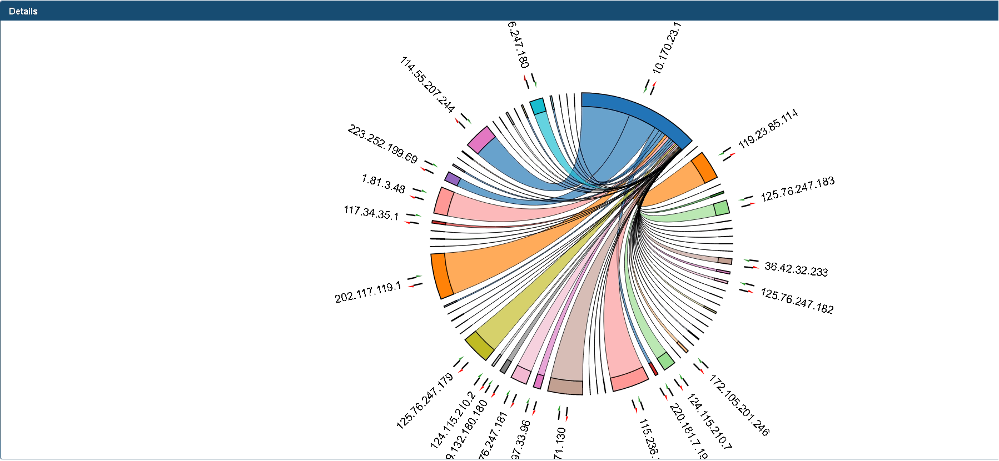
Scoring
此框架包含一个部分，分析人员可以使用不同的值对IP地址和端口进行评分。为了给特定连接分配风险，请使用所有组合框的组合选择它，选择正确的风险评级（1 =高风险，2=中等/潜在风险，3=低/已接受风险）并点击分数按钮。从每个列表中选择一个值将缩小巧合，因此如果分析师希望使用一个相同的相关属性（即src端口80）对所有连接进行评分，则只选择相关的组合框，并将其余部分保留在第一行在顶部。
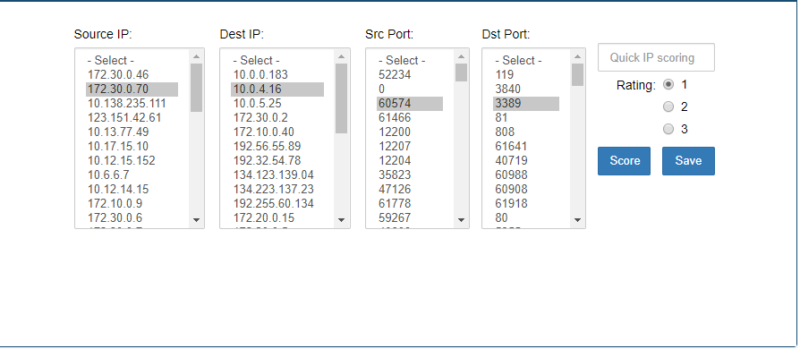
威胁调查 Threat Investigation (threat-investigation.html)
Threat Investigation视图页面是分析结果展示在Storyboard之前的最后一步，安全分析师在这个页面对即将展示的分析结果进行最后一步核查。
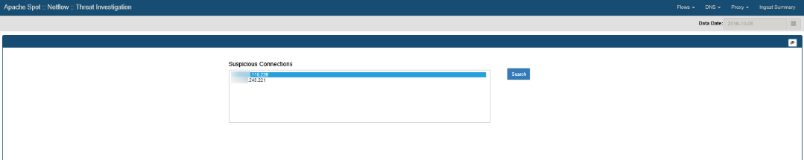
从列表中选择任何IP，然后单击“Search”可以查看有关它的特定详细信息。将执行对流表的查询，查看最初收集的原始数据，以查找白天与任何其他IP地址之间的所有通信，收集其他信息，例如：
- max&avg发送/接收的字节数
- max&avg发送/接收的数据包数
- 目的端口
- 源端口
- 第一个和最后一个连接时间
- 连接数
根据查询的结果，该模块将显示包含结果的表，其中包含以下信息：
- 每个连接数的顶部IP
- 传输的每个字节的顶级IP
- 可以通过更新top_results变量的值来设置存储在字典（n）中的结果数。
故事板 Story Board (storyboard.html)
Storyboard视图页面用于呈现系统最终的分析结果，供用户掌握高风险的安全威胁事件以及更进一步的信息。
- 事件进展
- 影响分析
- 地理位置
- 时间时间轴
NetFlow Story Board
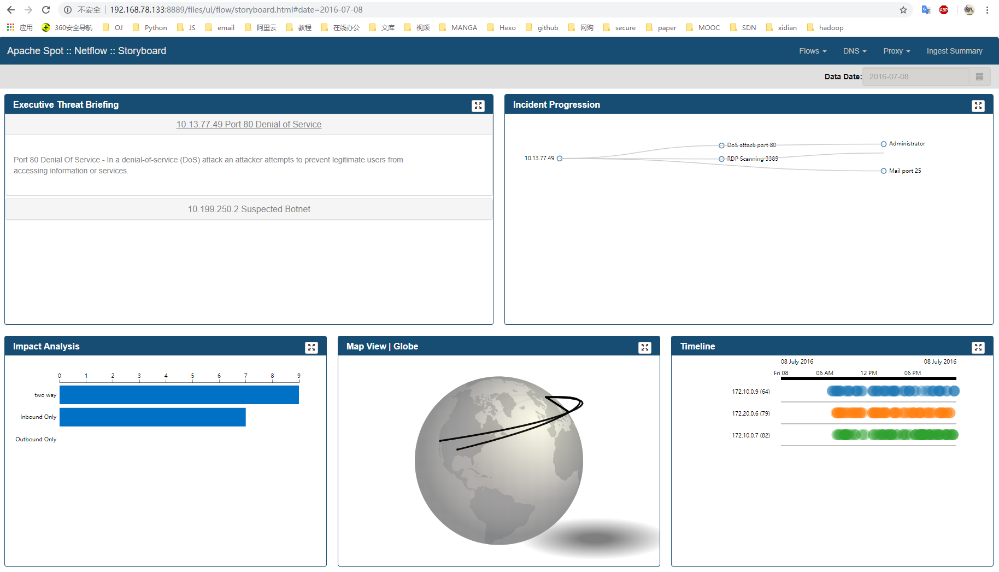
DNS Story Board
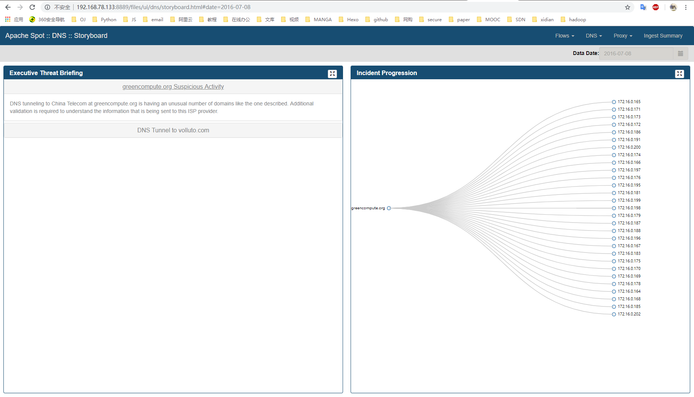
Ingest Summary 用于了解系统的数据采集情况，可以查看采集的数据类型在指定时间段的数据量分布详情。
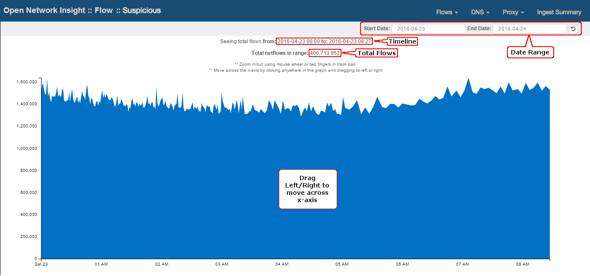
SPOT 待解决问题
- SPOT-Ingest
- 无线网卡开启监听模式时抓取wifi流量时会周期性断开重连
- 使用fprobe抓取到的wifi数据包在转化成netflow格式时会忽略一半以上的数据包
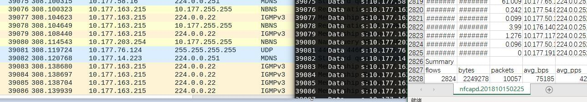 - DNS抓取数据包时时间久了会自动断网
- 数据上传至HDFS后有时无法及时上传至Hive
- SPOT-ML
- DNS数据无法读取
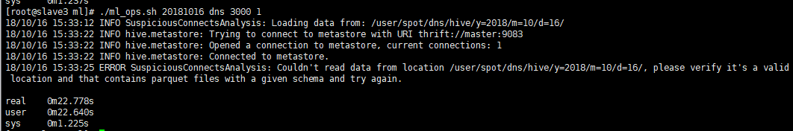
- DNS数据无法读取
- SPOT-OA
- SPOT-OA start_oa.py处理无线数据时经常报错
- GeoIP
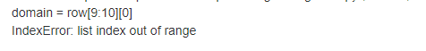 - SPOT-OA的日期选择栏无法使用，只能通过更改地址栏刷新进行选择
- Suspicious模块的IP附带信息功能未启动
- 分析的数据中没有分类出可疑流量，未测试Threat Investigation及Story Board功能
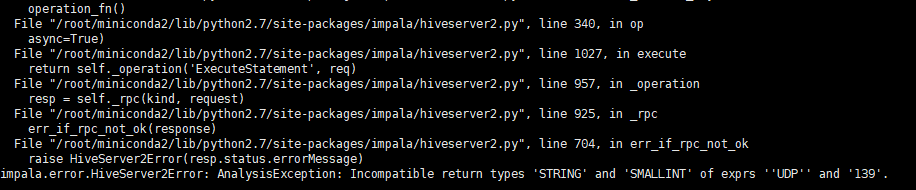
解决思路
看文档！！！参考 Reference
[1] http://blog.nsfocus.net/apache-spot/#1_Apache_Spot
[2] http://spot.apache.org/doc/